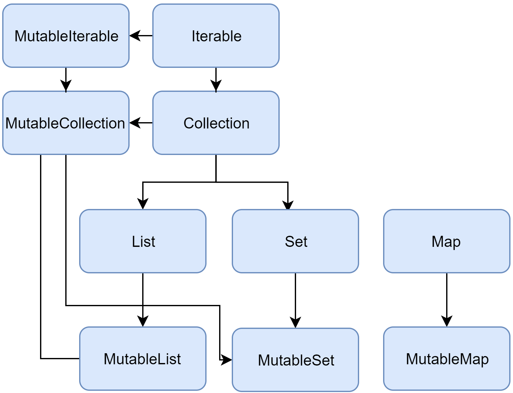

基础概述 相关资源：
数组创建
数组的创建两种方式：一种是使用函数arrayOf()；另外一种是使用工厂函数。如下所示，我们分别是两种方式创建了两个数组：
1 2 3 4 5 6 7 fun main (args: Array <String >) val a = arrayOf(1 , 2 , 3 ) val b = Array(3 , { i -> (i * 2 ) }) }
除了类Array，还有ByteArray, ShortArray, IntArray，用来表示各个类型的数组，省去了装箱操作，因此效率更高。
空安全原理
将 Kotlin 编译后的字节码反编译后可以看出：
非空类型的属性编译器会添加 @NotNull 注解，可空类型会添加 @Nullable 注解；
非空类型直接对参数进行判空，如果为空直接抛出异常；
可空类型，如果是 ?. 判空，不空才执行后续代码，否则返回null；如果是 !!，空的话直接抛出NPE异常。
标准库函数 run 用法一：
函数定义：public inline fun <R> run(block: () -> R): R = block()
功能：调用run函数块。返回值为函数块最后一行，或者指定return表达式
实例： 1 2 3 4 5 val a = run { println("run" ) return @run 3 } println(a)
运行结果：
用法二：
函数定义：public inline fun <T, R> T.run(block: T.() -> R): R = block()
功能：调用某对象的run函数，在函数块内可以通过 this 指代该对象。返回值为函数块的最后一行或指定return表达式
实例： 1 2 3 4 5 val a = "string" .run { println(this ) 3 } println(a)
运行结果：
apply
函数定义：public inline fun <T> T.apply(block: T.() -> Unit): T { block(); return this }
功能：调用某对象的apply函数，在函数块内可以通过 this 指代该对象。返回值为该对象自己
实例： 1 2 3 4 val a = "string" .apply { println(this ) } println(a)
运行结果：
let
函数定义：public inline fun <T, R> T.let(block: (T) -> R): R = block(this)
功能：调用某对象的let函数，则该对象为函数的参数。在函数块内可以通过 it 指代该对象。返回值为函数块的最后一行或指定return表达式
实例： 1 2 3 4 5 val a = "string" .let { println(it) 3 } println(a)
运行结果：
also
函数定义：public inline fun <T> T.also(block: (T) -> Unit): T { block(this); return this }
功能：调用某对象的also函数，则该对象为函数的参数。在函数块内可以通过 it 指代该对象。返回值为该对象自己
实例： 1 2 3 4 val a = "string" .also { println(it) } println(a)
运行结果：
with
函数定义：public inline fun <T, R> with(receiver: T, block: T.() -> R): R = receiver.block()
功能：with函数和前面的几个函数使用方式略有不同，因为它不是以扩展的形式存在的。它是将某对象作为函数的参数，在函数块内可以通过 this 指代该对象。返回值为函数块的最后一行或指定return表达式
实例： 1 2 3 4 5 val a = with("string" ) { println(this ) 3 } println(a)
运行结果：
集合 概述
List 是一个有序集合，可通过索引（反映元素位置的整数）访问元素。元素可以在 list 中出现多次。
Set 是唯一元素的集合。它反映了集合（set）的数学抽象：一组无重复的对象。一般来说 set 中元素的顺序并不重要。
Map（或者字典）是一组键值对。键是唯一的，每个键都刚好映射到一个值。值可以重复。

构造集合 1 2 3 4 5 6 7 8 9 10 11 12 13 14 15 16 17 18 19 20 val numbersSet = setOf("one" , "two" , "three" , "four" )val emptySet = mutableSetOf<String>()val numbersMap = mapOf("key1" to 1 , "key2" to 2 , "key3" to 3 , "key4" to 1 )val numbersMap = mutableMapOf<String, String>().apply { this ["one" ] = "1" ; this ["two" ] = "2" }val empty = emptyList<String>()val doubled = List(3 , { it * 2 }) println(doubled) val linkedList = LinkedList<String>(listOf("one" , "two" , "three" ))val presizedSet = HashSet<Int >(32 )
区间与数列 数列
1 2 3 4 5 6 7 8 9 10 11 for (i in 1 ..4 ) print(i)for (i in 4 downTo 1 ) print(i)for (i in 1 ..8 step 2 ) print(i)for (i in 1 until 10 ) { print(i) } println((1 ..10 ).filter { it % 2 == 0 })
区间
如果需要为类创建一个区间，则在区间起始值上调用rangeTo()函数，并提供结束值作为参数。rangeTo（）通常以其运算符形式调用..：
1 2 3 val versionRange = Version(1 , 11 )..Version(1 , 30 )println(Version(0 , 9 ) in versionRange) println(Version(1 , 20 ) in versionRange)
Iterator迭代器 Iterator 迭代器可用来遍历容器，Iterable 接口的继承者（包括 Set 与 List）可以通过调用 iterator() 函数获得迭代器。
1 2 3 4 5 public interface Iterator <out T > public operator fun next () public operator fun hasNext () Boolean }
Sequence序列 Sequence 提供与 Iterable 相同的函数，但使用另一种方法来进行多步骤集合处理。
当 Iterable 的处理包含多个步骤时，它会完成每个处理步骤并返回其结果——中间集合，然后在此集合上执行下一步骤。
而 Sequence 的多步处理可能会延迟执行：仅当请求整个处理链的结果时才进行实际计算。
另外二者的操作执行顺序也不同：
Sequence 对每个元素逐个执行所有处理步骤。
Iterable 完成整个集合的每个步骤，然后进行下一步。
因此，这些序列可避免生成中间步骤的结果，从而提高了整个集合处理链的性能。但是，序列的延迟性质增加了一些开销，这些开销在处理较小的集合或进行更简单的计算时可能很重要。因此，应该同时考虑使用 Sequence 与 Iterable，并确定在哪种情况更适合。
构造 Sequence 的方法：
1 2 3 4 5 6 7 8 9 10 11 12 13 14 15 16 17 18 19 val numbersSequence = sequenceOf("four" , "three" , "two" , "one" )val numbers = listOf("one" , "two" , "three" , "four" )val numbersSequence = numbers.asSequence()val oddNumbers = generateSequence(1 ) { it + 2 } println(oddNumbers.take(5 ).toList()) val oddNumbers = sequence { yield(1 ) yieldAll(listOf(3 , 5 )) yieldAll(generateSequence(7 ) { it + 2 }) } println(oddNumbers.take(5 ).toList())
Iterable示例
1 2 3 4 5 6 7 8 9 10 11 12 13 14 15 16 17 18 19 20 21 22 23 24 25 val words = "The quick brown fox jumps over the lazy dog" .split(" " )val lengthsList = words.filter { println("filter: $it " ); it.length > 3 } .map { println("length: ${it.length} " ); it.length } .take(4 ) println("Lengths of first 4 words longer than 3 chars:" ) println(lengthsList) filter: The filter: quick filter: brown filter: fox filter: jumps filter: over filter: the filter: lazy filter: dog length: 5 length: 5 length: 5 length: 4 length: 4 Lengths of first 4 words longer than 3 chars: [5 , 5 , 5 , 4 ]
Sequence示例
1 2 3 4 5 6 7 8 9 10 11 12 13 14 15 16 17 18 19 20 21 22 23 24 25 val words = "The quick brown fox jumps over the lazy dog" .split(" " )val wordsSequence = words.asSequence()val lengthsSequence = wordsSequence.filter { println("filter: $it " ); it.length > 3 } .map { println("length: ${it.length} " ); it.length } .take(4 ) println("Lengths of first 4 words longer than 3 chars" ) println(lengthsSequence.toList()) Lengths of first 4 words longer than 3 chars filter: The filter: quick length: 5 filter: brown length: 5 filter: fox filter: jumps length: 5 filter: over length: 4 [5 , 5 , 5 , 4 ]
扩展 Kotlin能够扩展一个类的新功能而无需继承该类或者使用像装饰者这样的设计模式，这通过叫做扩展 的特殊声明完成。
扩展函数 声明一个扩展函数需要用被扩展的类型来作为前缀：
1 2 3 4 5 6 7 8 fun MutableList<Int> .swap (index1: Int , index2: Int ) val tmp = this [index1] this [index1] = this [index2] this [index2] = tmp } val list = mutableListOf(1 , 2 , 3 )list.swap(0 , 2 )
扩展不能真正的修改他们所扩展的类，定义一个扩展并没有在一个类中插入新成员，仅仅是可以通过该类型的变量用点表达式去调用这个新函数。
扩展函数是静态分发的，这意味着调用的扩展函数是由函数调用所在的表达式的类型来决定的，而不是由表达式运行时求值结果决定的。例如：
1 2 3 4 5 6 7 8 9 10 11 12 13 open class Shape class Rectangle : Shape fun Shape.getName () "Shape" fun Rectangle.getName () "Rectangle" fun printClassName (s: Shape ) println(s.getName()) } printClassName(Rectangle())
这个例子会输出 “Shape”，因为调用的扩展函数只取决于参数 s 的声明类型，该类型是 Shape 类。
如果一个类定义有一个成员函数与一个扩展函数，而这两个函数又有相同的接收者类型、相同的名字，并且都适用给定的参数，这种情况总是取成员函数。
可以为可空的接收者类型定义扩展，这样的扩展可以在对象变量上调用，即使其值为null，并且可以在函数体内检测this == null，这能让你在没有检测 null 的时候调用 Kotlin 中的toString()，检测发生在扩展函数的内部：
1 2 3 4 5 6 fun Any?.toString () if (this == null ) return "null" return toString() }
扩展属性 1 2 val <T> List<T>.lastIndex: Int get () = size - 1
由于扩展没有实际的将成员插入类中，因此对扩展属性来说幕后字段是无效的。所以扩展属性不能有初始化器，他们的行为只能由显式提供的 getters/setters 定义。
伴生对象的扩展 可以为伴生对象定义扩展函数与属性：
1 2 3 4 5 6 7 8 9 class MyClass companion object { } } fun MyClass.Companion.printCompanion () "companion" ) } fun main () MyClass.printCompanion() }
扩展的作用域 大多数时候我们在顶层定义扩展——直接在包里：
1 2 3 package org.example.declarations fun List<String> .getLongestString ()
要使用所定义包之外的一个扩展，我们需要在调用方导入它：
1 2 3 4 5 6 7 8 package org.example.usage import org.example.declarations.getLongestString fun main () val list = listOf("red" , "green" , "blue" ) list.getLongestString() }
委托 概述 有一些常见的属性类型，虽然可以在每次需要的时候手动去实现它们，但是如果能够把它们只实现一次并放入一个库会更好，这时可以使用属性委托。
类的委托 委托模式已经证明是实现继承的一个很好的替代方式，而Kotlin可以零样板代码地原生支持它：
1 2 3 4 5 6 7 8 9 10 11 12 13 14 interface Base fun print () } class BaseImpl val x: Int ) : Base { override fun print () } class Derived by b fun main () val b = BaseImpl(10 ) Derived(b).print() }
编译器会使用override覆盖的实现而不是委托对象中的：
1 2 3 4 5 6 7 8 9 10 11 12 13 14 15 16 17 18 19 20 21 interface Base fun printMessage () fun printMessageLine () } class BaseImpl val x: Int ) : Base { override fun printMessage () override fun printMessageLine () } class Derived by b { override fun printMessage () "abc" ) } } fun main () val b = BaseImpl(10 ) Derived(b).printMessage() Derived(b).printMessageLine() }
以这种方式重写的成员不会在委托对象的成员中调用，委托对象的成员只能访问其自身对接口成员实现：
1 2 3 4 5 6 7 8 9 10 11 12 13 14 15 16 17 18 19 20 21 22 23 24 interface Base val message: String fun print () } class BaseImpl val x: Int ) : Base { override val message = "BaseImpl: x = $x " override fun print () } class Derived by b { override val message = "Message of Derived" } fun main () val b = BaseImpl(10 ) val derived = Derived(b) derived.print() println(derived.message) }
属性委托 属性的委托不必实现任何的接口，但是需要提供一个getValue()函数（与setValue()——对于var属性）：
1 2 3 4 5 6 7 8 9 10 11 12 13 14 15 16 17 18 class Delegate operator fun getValue (thisRef: Any ?, property: KProperty <*>) return "$thisRef , thank you for delegating '${property.name} ' to me!" } operator fun setValue (thisRef: Any ?, property: KProperty <*>, value: String ) println("$value has been assigned to '${property.name} ' in $thisRef ." ) } } class Example var p: String by Delegate() } val e = Example()println(e.p) e.p = "NEW"
接下来介绍一些标准委托。
延迟属性Lazy lazy()是接受一个lambda并返回一个Lazy <T>实例的函数，返回的实例可以作为实现延迟属性的委托：第一次调用get()会执行已传递给lazy()的lambda表达式并记录结果，后续调用get()只是返回记录的结果。
1 2 3 4 5 6 7 8 9 10 11 12 13 14 15 16 17 18 class LazySample val lazy: String by lazy { println("init!" ) "my lazy" } } fun main (args: Array <String >) val sample = LazySample() println("lazy = ${sample.lazy} " ) println("lazy = ${sample.lazy} " ) } ->output init !lazy = my lazy lazy = my lazy
Map值映射到类属性 1 2 3 4 5 6 7 8 9 10 11 12 13 14 15 16 class UserX val map: Map<String, Any?>) { val name: String by map val age: Int by map } fun main (args: Array <String >) val user = UserX(mapOf( "name" to "John Doe" , "age" to 123 )) println("name = ${user.name} , age = ${user.age} " ) }
可观察属性 1 2 3 4 5 6 7 8 9 10 11 12 13 14 15 16 17 18 19 20 21 22 23 24 25 26 27 28 29 30 31 32 33 34 35 class Main private var name: String by Delegates.observable("oldName" ) { property, oldValue, newValue -> println("${property.name} 属性变化：$oldValue -> $newValue " ) } private var age: Int by Delegates.vetoable(0 , { property, oldValue, newValue -> println("${property.name} 属性变化：$oldValue -> $newValue " ) newValue > 0 }) private fun print () println("name = $name " ) println("age = $age " ) } fun main () print() name = "hearing" age = -1 print() age = 22 print() } } ->output name = oldName age = 0 name属性变化：oldName -> hearing age属性变化：0 -> -1 name = hearing age = 0 age属性变化：0 -> 22 name = hearing age = 22
属性非空强校验 1 2 3 4 5 6 7 8 9 10 11 12 13 14 15 class User var name: String by Delegates.notNull() fun init (name: String ) this .name = name } } fun main (args: Array <String >) val user = User() user.init ("Carl" ) println(user.name) }
局部委托属性 可以将局部变量声明为委托属性，例如可以使一个局部变量惰性初始化：
1 2 3 4 5 6 7 fun example (computeFoo: () -> Foo ) val memoizedFoo by lazy(computeFoo) if (someCondition && memoizedFoo.isValid()) { memoizedFoo.doSomething() } }
memoizedFoo变量只会在第一次访问时计算。如果someCondition失败，那么该变量根本不会计算。
泛型 基础使用 Kotlin泛型的使用大部分跟Java类似。
reified
reified：使抽象的东西更加具体或真实。由于范型擦除，任何在运行时需要知道泛型确切类型信息的操作都没法用了。使用这个关键字后可以将修饰的范型 T 当成一个具体的类，进而使用 T::class 等。
比如我们定义实现一个扩展函数启动 Activity，一般都需要传 Class<T> 参数，使用 reified 通过添加类型传递简化泛型参数：
1 2 3 4 5 6 7 8 9 10 11 private fun <T : Activity> Activity.startActivity (context: Context , clazz: Class <T >) startActivity(Intent(context, clazz)) } startActivity(context, NewActivity::class .java) inline fun <reified T : Activity> Activity.startActivity (context: Context ) startActivity(Intent(context, T::class .java)) } startActivity<NewActivity>(context)
Kotlin 中， 使用安全转换操作符 as?，它可以在失败时返回 null，然而，如果获得的数据不是它期望的类型，这个函数会出现 crash：
1 2 3 4 5 6 7 8 9 10 fun <T> Bundle.getDataOrNull () return getSerializable(DATA_KEY) as ? T } val bundle: Bundle? = Bundle()bundle?.putSerializable(DATA_KEY, "Testing" ) val strData: String? = bundle?.getDataOrNull()val intData: Int ? = bundle?.getDataOrNull()
使用 reified，简化泛型参数和保证 as? 类型转换安全性：
1 2 3 4 5 6 7 8 9 10 private inline fun <reified T> Bundle.getDataOrNull () return getSerializable(DATA_KEY) as ? T } val bundle: Bundle? = Bundle()bundle?.putSerializable(DATA_KEY, "Testing" ) val strData: String? = bundle?.getDataOrNull()val intData: Int ? = bundle?.getDataOrNull()
where
当一个类型参数指定多个约束时，在Java中使用&连接多个类、接口。
1 2 3 4 5 6 7 class ClassA interface InterfaceB public class MyClass <T extends ClassA & InterfaceB > Class<T> variable; }
而在Kotlin中，使用where关键字实现这个功能。下面的代码，T必须继承ClassA以及实现InterfaceB。
1 2 3 4 5 open class ClassA interface InterfaceB class MyClass <T >var variable: Class<T>) where T : ClassA, T : InterfaceB
型变 Java的型变 参考 Java泛型 。
out(协变)
类似 Java 的 ? extends T：
1 2 3 interface Production <out T > fun produce () }
in(逆变)
类似 Java 的 ? super T：
1 2 3 interface Consumer <in T > fun consume (item: T ) }
类似于 Java 中的无界类型通配符 ?(即? extends Object), Kotlin 使用星号投影* 代指所有类型，相当于out Any。
对于Foo<out T>，其中T是一个具有上界T的协变类型参数，Foo<*>等价于Foo<out T>。这意味着当T未知时，可以安全地从Foo<*>读取TUpper的值。
对于Foo<in T>，其中T是一个逆变类型参数，Foo<*>等价于Foo<in Nothing>。这意味着当T未知时，没有什么可以以安全的方式写入Foo<*>。
对于Foo<T>，其中T是一个具有上界TUpper的不型变类型参数，Foo<*>对于读取值时等价于Foo<out TUpper>，而对于写值时等价于Foo<in Nothing> 。
@JvmSuppressWildcards, @JvmWildcard
在 Kotlin 中这样写不会报错: val numberList : List<Number> = ArrayList<Int>(), 因为默认情况下 kotlin 反编译 Java 的时候会在必要的情况下生成通配符，如下：
1 2 3 fun transformList (list : List <Number >, list : List <String >) public List<Number> transformList(List<? extends Number> list, List<String> list)
入参生成 Number 的通配符 List<? extends Number>, 另一个入参 List<String> 因为是最终类所以没有生成，返回值也没有生成。
JvmSUppressWildcards: 如果想要更改默认的生成行为，可以使用 @JvmSUppressWildcards 注解，它可传入一个布尔值(默认值是true)，true表示生成类型不带通配符，false 表示生成类型带通配符。
JvmWildcard: 相当于 @JvmSuppressWildcards(false)，不同的是修饰的目标对象不同，JvmWildcard 只能作用于类型参数，JvmSuppressWildcards 可以作用于类、函数、属性、类型参数。